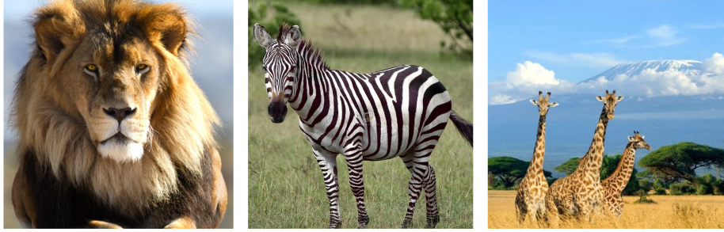

A África é o terceiro maior continente do mundo em extensão territorial e apresenta grande diversidade natural. Sua posição geográfica, com a maior parte do território localizada entre os trópicos, influencia diretamente suas características climáticas e vegetais. O continente é marcado pelo predomínio de climas quentes, mas possui variações importantes que resultam em diferentes tipos de paisagens, desde florestas densas até desertos extensos. Essa diversidade torna a África um dos continentes mais ricos em biodiversidade e contrastes naturais.
O clima da África é bastante diversificado e influenciado pela latitude, pelo relevo e pelas massas de ar. Na região central predomina o clima equatorial, quente e úmido o ano todo, como na Floresta do Congo. Ao redor da faixa equatorial há o clima tropical, com verão chuvoso e inverno seco. No norte, destaca-se o clima desértico, como no Deserto do Saara, quente e seco, enquanto no sul há áreas de clima semiárido, como no Deserto do Kalahari. Nas regiões extremas do norte e do sul ocorre o clima mediterrâneo, com verões secos e invernos amenos, e nas montanhas do leste africano predomina o clima de altitude, com temperaturas mais amenas.
O relevo da África é caracterizado pelo predomínio de planaltos antigos, formados por rochas cristalinas. Por isso, o continente é conhecido como “continente de planaltos”. Entre as principais formações destacam-se a Cordilheira do Atlas, no norte, o Monte Kilimanjaro, ponto mais alto da África, e o Vale do Rift, importante área de atividade tectônica no leste. Além disso, há extensas áreas desérticas, como o Deserto do Saara, e planícies costeiras estreitas ao longo do litoral.
A hidrografia sul-americana é extremamente rica. O continente abriga alguns dos maiores rios do planeta, com destaque para o Rio Amazonas, considerado o rio de maior volume de água do mundo. Ele percorre vários países e forma a maior bacia hidrográfica da Terra. Outros rios importantes são o Rio Paraná, o Rio Paraguai e o Rio Uruguai, que formam a Bacia do Prata, além do Rio São Francisco, no Brasil. Esses rios são fundamentais para o abastecimento de água, geração de energia elétrica, transporte e agricultura.
A vegetação da América do Sul é bastante diversificada, resultado das diferenças de clima, relevo e localização geográfica do continente. Entre os principais biomas está a Floresta Amazônica, a maior floresta tropical do mundo, marcada pela grande biodiversidade e pelo clima quente e úmido. No Brasil central destaca-se o Cerrado, caracterizado por vegetação de savana, com árvores baixas e gramíneas adaptadas à seca. No sul do continente encontram-se os Pampas, formados principalmente por campos naturais. Ao longo do litoral brasileiro está a Mata Atlântica, rica em espécies, mas bastante reduzida pelo desmatamento. Já no Nordeste do Brasil, a Caatinga apresenta plantas adaptadas ao clima semiárido. Essa variedade de formações vegetais é essencial para a biodiversidade, o equilíbrio climático e a preservação dos recursos naturais do continente.